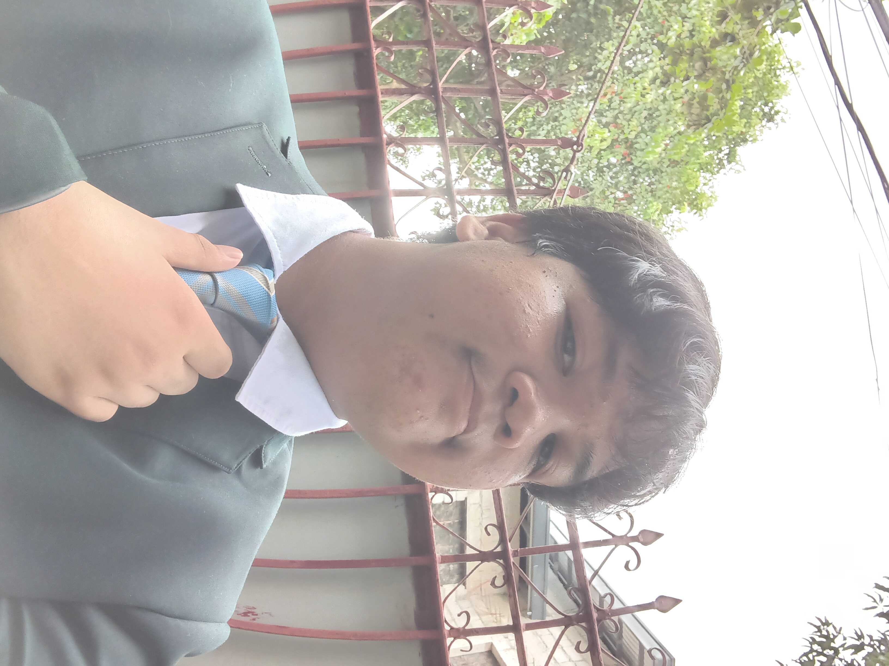
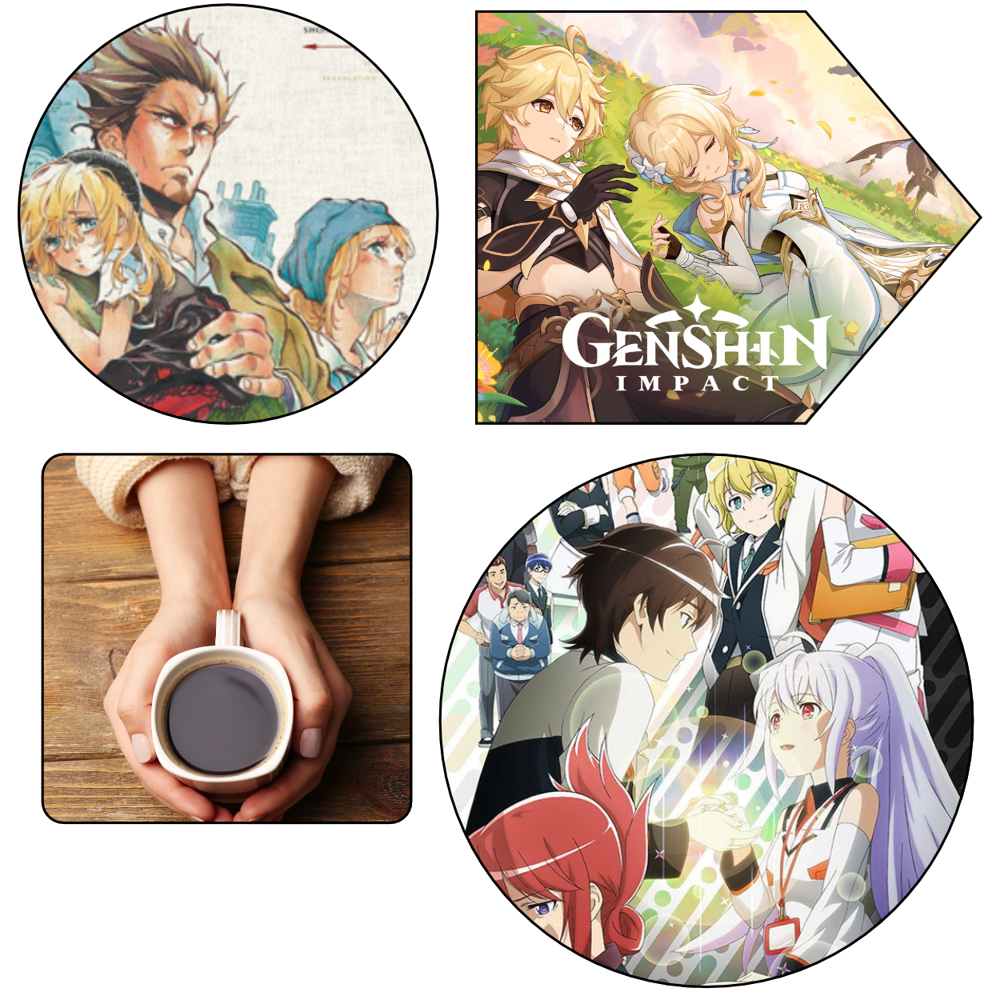

ABOUT ME
Im a full-time student and a sophomore here at UPOU, taking a Bachelor of Arts in Multimedia Studies. I enjoyed taking my courses, in particular my programming course in MMS 141 and another course which is MMS 170, where I created my own mood board. I tend to overthink things, resulting in delaying myself in doing them. Nevertheless, I strive to change this as I experience more things. My aspiration in the future is to become an animator, and that is why I am and will always be doing my very best in my studies.
THINGS I LOVE
- Drinking coffee
- Watching romance and isekai anime
- Reading romance and historical manga
- Playing gacha games like Genshin Impact

PASSION PROJECTS
Gamer Girl
[2021-11-21]
Requested phone wallpaper illustration by a friend drawn traditionally with pens and alcohol markers. Features a pink-haired girl with her hobbies surrounding her including Mobile Legends, drawing and reading.
Chibi AOT Trio
[2022-07-01]
Cross hatching drawing of chibi Eren, chibi Mikasa, and chibi Armin from the animated comedic shorts of the original Attack on Titan (AOT) anime/manga. This version of the AOT is much lighter than the themes of the original. It's a breather of a show that reimagines the characters as high school students, teacher and staff instead of soldiers. Both the original and the animated shorts were really enjoyable and inspired me to learn and draw using hatching techniques.
Violet Evergarden
[2022-04-14]
Digital art of Violet Evergarden using Microsoft Paint. Violet is a war survivor making a living through wrting letters that connect people after her special person supposedly died in that tragedy. Her story of finding her purpose and living a happy life after the war touched me to draw her.